Common-system page references


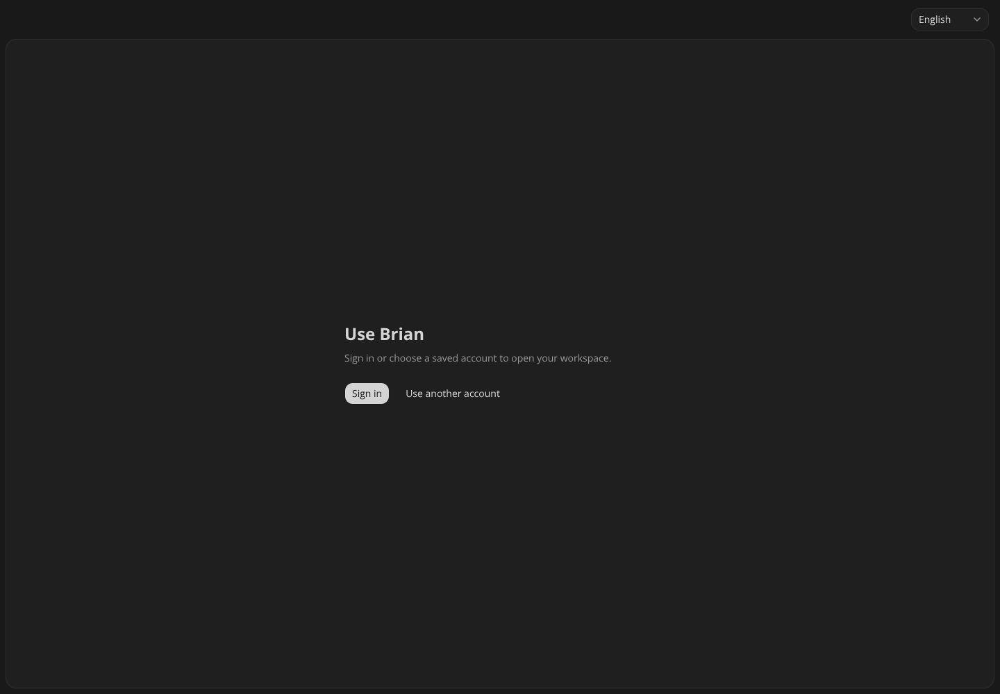

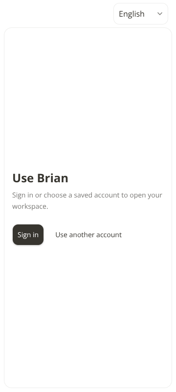
Historical baseline. F01–F07 now have fixes in the accompanying commits. After gallery · Fixes and whole-page review
Baseline develop 43a70a8e3 · 16 captures · Findings and source references · Method and reproduction · Capture manifest
Evidence boundary: only account entry and auth login are full public pages. Feature images are explicitly labeled isolated, unchanged production components with synthetic fixture input, not full authenticated pages. No product styling has been fixed in these images.


Real public page. Compare the navy/cyan background, card, CTA, and focused field with both account-entry references.
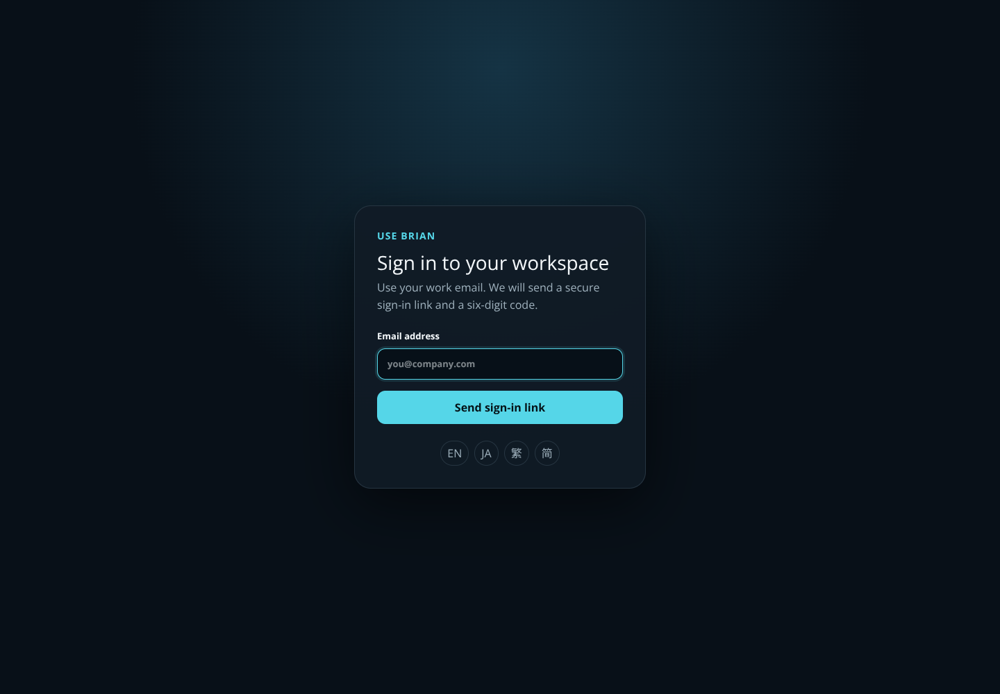
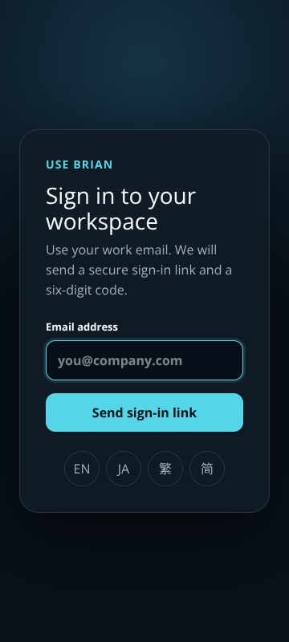
Isolated real primitives. Left neutral action versus right accent action. The checkbox property pictured on the right is disabled; do not treat it as an enabled-state color test.
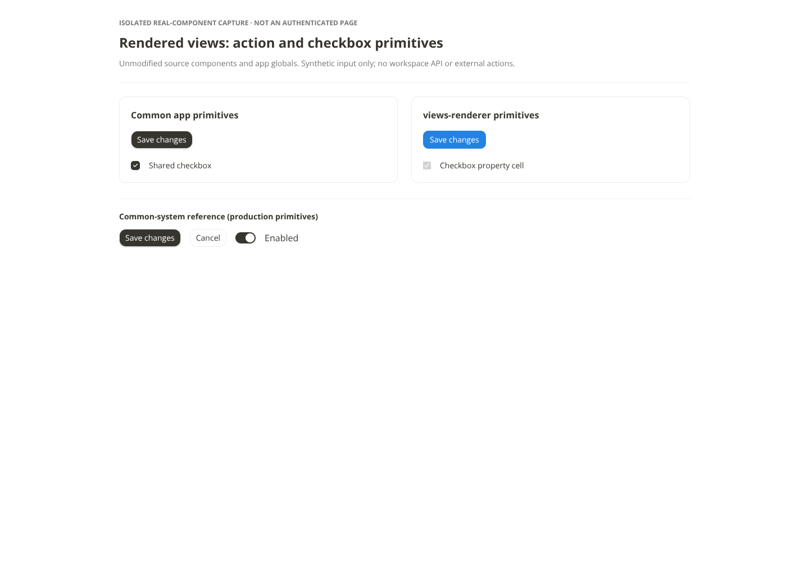
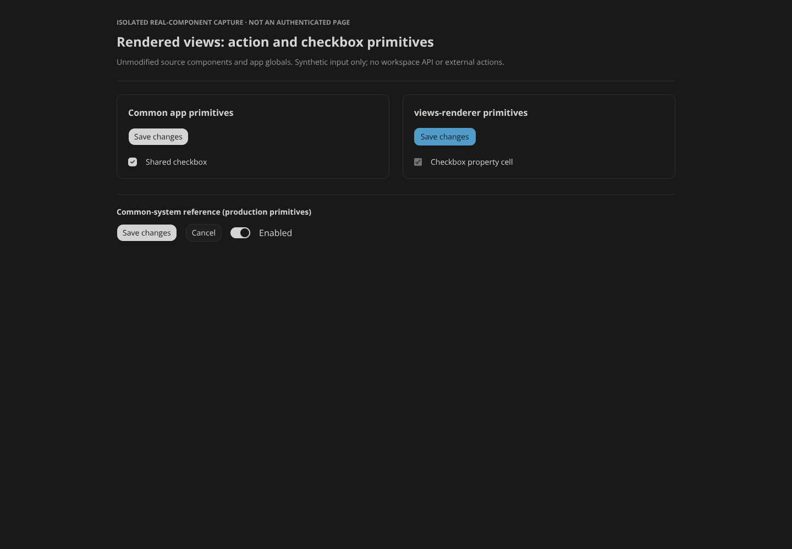
Isolated TriggerEditor. Inspect the selected Manual card border, wash, and icon against the neutral reference controls below.
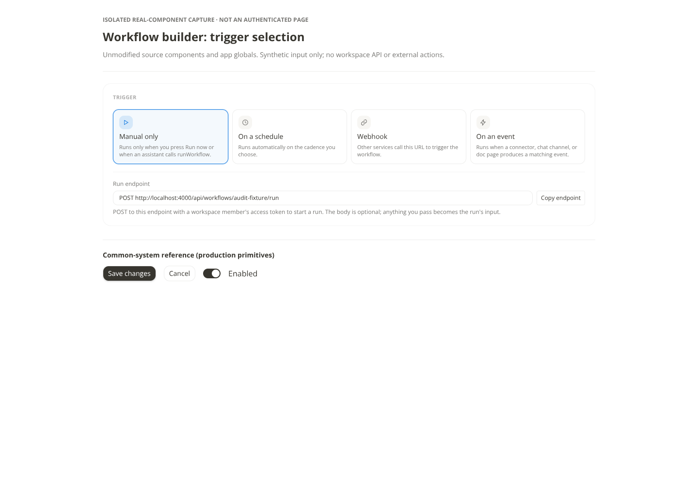
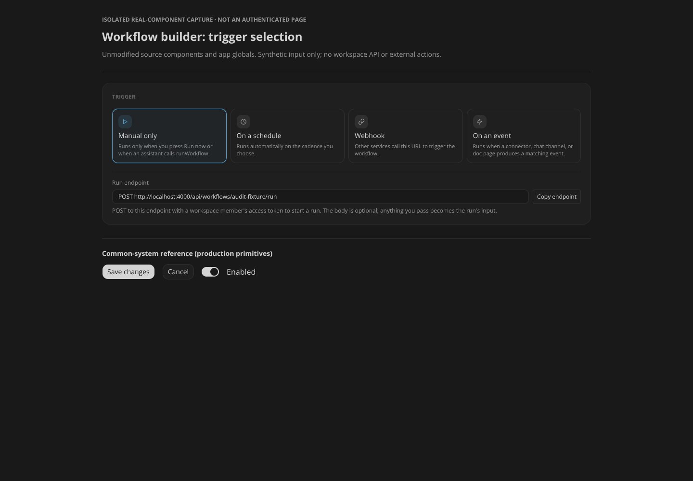
Isolated ChoiceCards with synthetic labels. Selected border/dot uses accent, while the real shared Switch and actions are neutral.
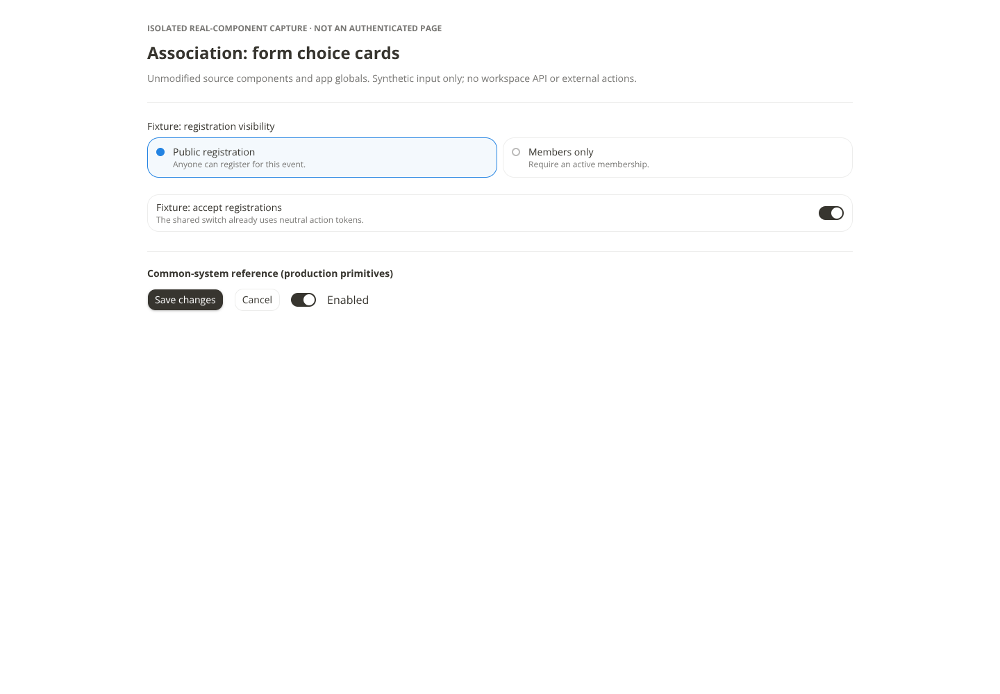
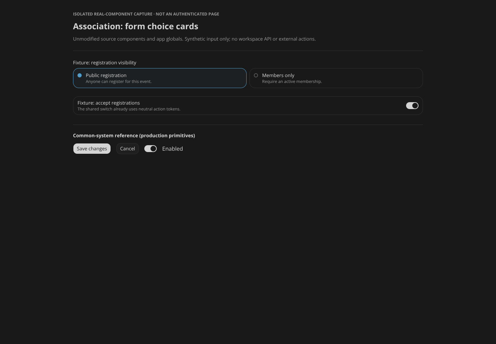
Isolated AnalyseTab. Inspect the selected first card versus neutral Run it and reference controls. No store query was executed.
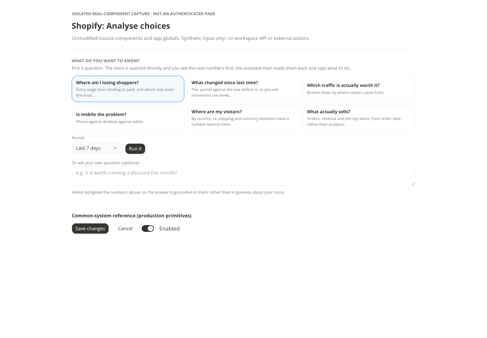
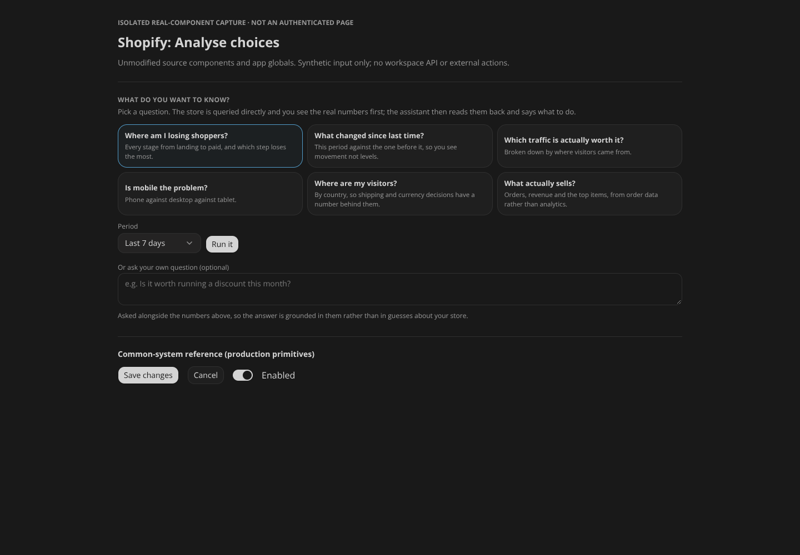
Isolated real picker. The white inner panel versus dark header/page is the finding. Blank emoji cells are a missing capture-environment emoji font, not a product defect.
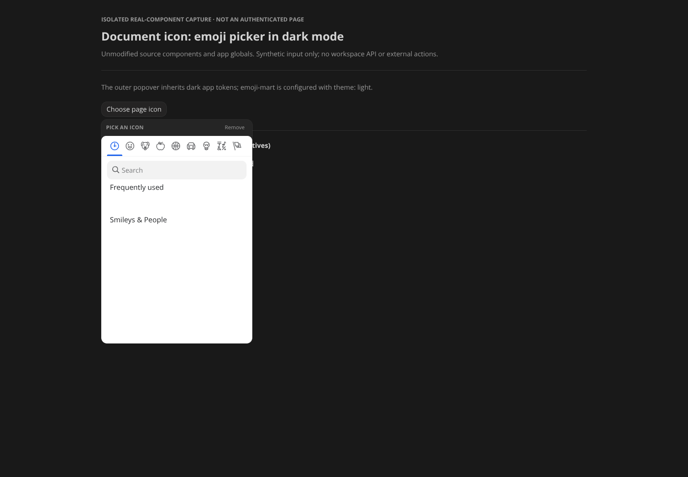
Isolated unenlarged primitive defaults. At 700px the text Button is only 32px high, although the phone contract extends to 767px. Icon/select/switch targets also need caller-level review. Full composed pages may enlarge these targets.
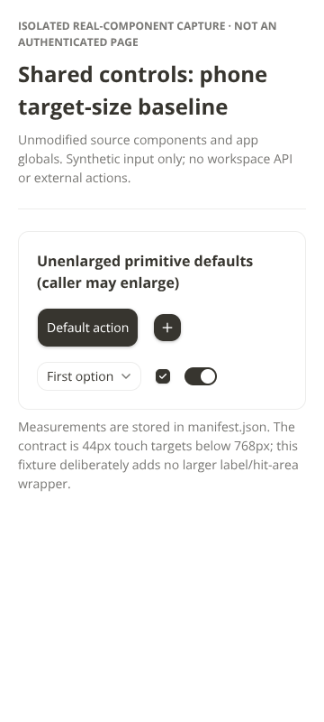
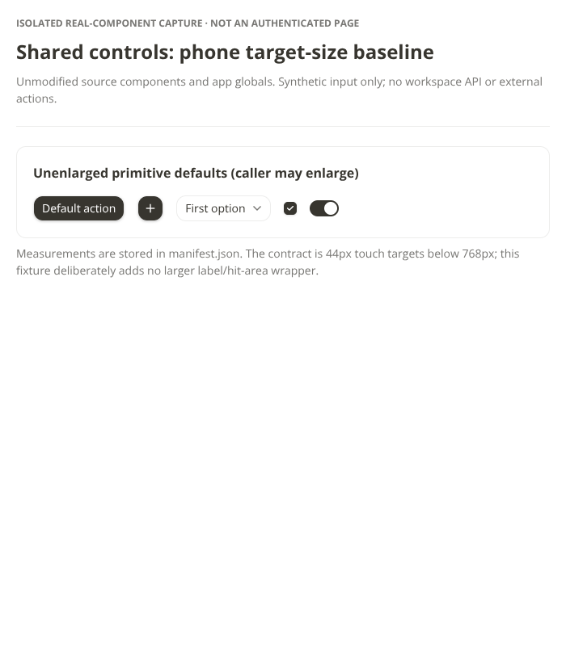